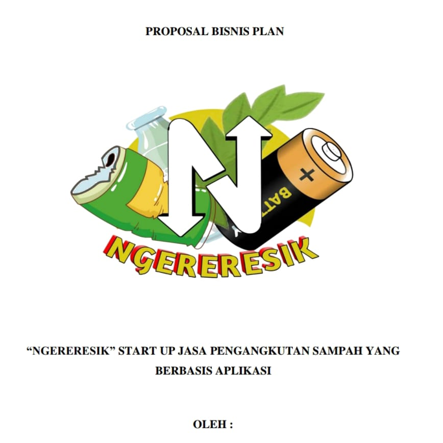
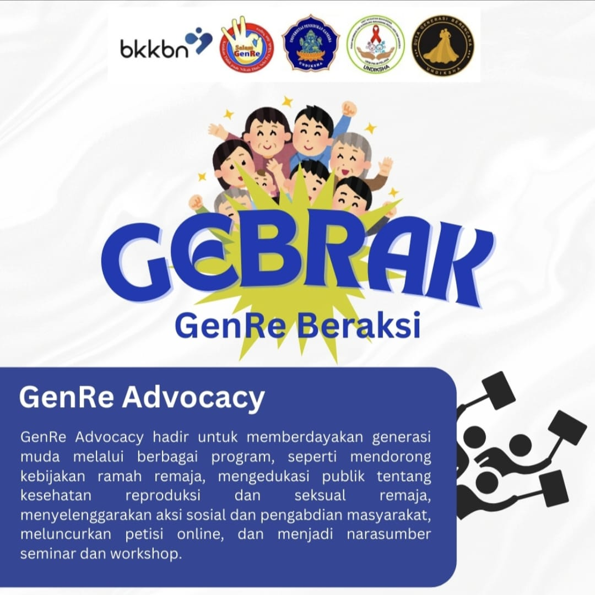

Portofolio Saya

Proposal Start Up
StartUp Jasa dalam pengangkutan sampah yang berbasis aplikasi.
Lihat Detail Proyek (PDF)Proposal Bisnis
Inovasi bahan pangan sayuran sehat dengan metode tanam Microgreen.
Lihat Detail Proyek (PDF)
Fotografi
Sebuah bunga mawar merah tunggal dalam vas kaca dengan latar belakang hitam.
Lihat Detail Proyek (PDF)
PKM
SIMBAH: Sistem Manajemen Bank Sampah Mewujudkan Smart City Kabupaten Buleleng.
Lihat Detail Proyek (PDF)
UI Design
Desain User Interface aplikasi RumahKu (Aplikasi Desain Bangunan)
Lihat Detail Proyek (PDF)

Poster Program Kerja
Sebuah bunga mawar merah tunggal dalam vas kaca dengan latar belakang hitam.
Lihat Detail Proyek (PDF)